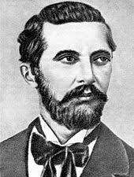
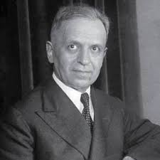
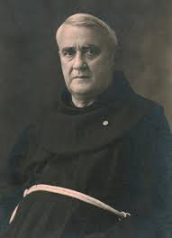
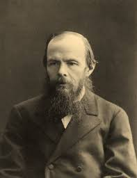
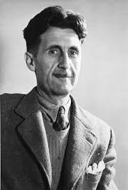
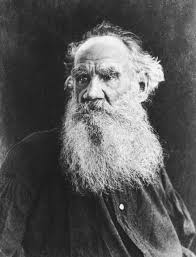
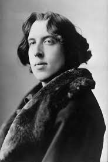

567,
Sami Frasheri
Sami Frasheri
Sami Frashëri ishte një shkrimtar, filozof dhe politikan shqiptar i shekullit XIX, i njohur për kontributet e tij në rrethin e Rilindjes Kombëtare. Ai është i famshëm për veprat e tij letrare dhe përpjekjet për modernizimin e gjuhës dhe kulturës shqipe.

Naim Frasheri
Naim Frasheri
Naim Frashëri ishte një poet, shkrimtar dhe intelektual shqiptar, i njohur si "Demi i Rilindjes Kombëtare Shqiptare". Vepra e tij letrare luajti një rol të rëndësishëm në zhvillimin e gjuhës shqipe dhe forcimin e identitetit kombëtar.
Ismail Kadare
Ismail Kadare
Ismail Kadare është një shkrimtar i njohur shqiptar, autor i shumë veprave të njohura, që përfshijnë romane, poezi dhe ese. Ai ka fituar fama ndërkombëtare dhe është shpallur fitues i çmimit "Man Booker" për kontributin e tij të jashtëzakonshëm në letërsinë botërore.

Faik Konica
Faik Konica
Faik Konica ishte një shkrimtar, gazetar dhe intelektual shqiptar, i njohur për kontributet e tij në Rilindjen Kombëtare. Ai luajti një rol të rëndësishëm në modernizimin e gjuhës shqipe dhe ishte një nga themeluesit e gazetës "Albania" në vitin 1897.

Gjergj Fishta
Gjergj Fishta
Gjergj Fishta ishte një poet, shkrimtar dhe prift katolik shqiptar, i njohur për veprat e tij letrare dhe për angazhimin në Rilindjen Kombëtare. Vepra e tij më e njohur, "Lahuta e Malcis", është një epikë që pasqyron luftën dhe traditat e popullit shqiptar.
Mitrush Kuteli
Mitrush Kuteli
Mitrush Kuteli ishte një shkrimtar dhe përkthyes shqiptar, i njohur për kontributet e tij në letërsinë moderne shqipe. Vepra e tij përfshin romane, tregime dhe përkthime, ku ai pasqyron jetën dhe traditat shqiptare me një stil të veçantë dhe plot humanizëm.

Franz Kafka
Franz Kafka
Franz Kafka ishte një shkrimtar austriak me origjinë çeke, i njohur për stilin e tij të veçantë dhe temat e thella ekzistenciale. Vepra e tij më e njohur, si "Procesi" dhe "Metamorfoza", pasqyrojnë ndjenja të izolimit dhe absurditetit të jetës moderne.

Fyodor Dostoyevsky
Fyodor Dostoyevsky
Fyodor Dostoyevski ishte një shkrimtar rus i njohur për romanet e tij të thella psikologjike dhe filozofike, si "Kryevepra" dhe "Vëllezërit Karamazov". Vepra e tij trajton çështje të moralit, lirisë dhe natyrës njerëzore, duke u bërë një nga shkrimtarët më të mëdhenj të letërsisë botërore.

George Orwell
George Orwell
George Orwell ishte një shkrimtar dhe gazetar britanik, i njohur për veprat e tij të njohura si "1984" dhe "Ferma e kafshëve", që kritikojnë totalitarizmin dhe abuzimin me pushtetin. Ai përdori një stil të qartë dhe të drejtpërdrejtë për të trajtuar çështje sociale, politike dhe humaniste.

Leo Tolstoy
Leo Tolstoy
Leo Tolstoy ishte një shkrimtar rus, i njohur për veprat e tij të mëdha si "Luftra dhe Paqja" dhe "Ana Karenina", që trajtojnë tema të thella filozofike dhe ekzistenciale. Ai ishte gjithashtu një mendimtar dhe reformator shoqëror, i njohur për filozofinë e tij të paqes dhe pacifizmit.
